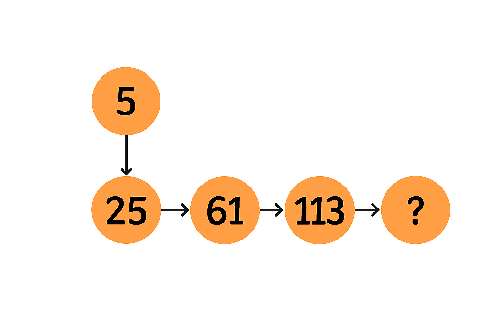
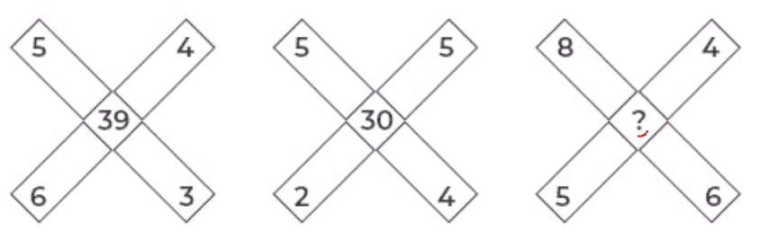

Find the value of the question mark (?)

Choose the best answer:
Study the 3×3 matrix. Each row follows the same rule relating the first two entries to the third entry. Find the missing number ? that makes the middle row obey the same rule.
|
3 |
2 |
11 |
|
? |
6 |
13 |
|
3 |
5 |
23 |
In the following question select the number which can be placed at the question ? mark which follows the same rule relating the first two entries to the third entry.

Study the 3×3 matrix. Each row follows the same rule relating the first two entries to the third entry. Find the missing number ? that makes the middle row obey the same rule.
|
5 |
J |
G |
|
4 |
A |
C |
|
B |
7 |
5 |
|
V |
Q |
? |